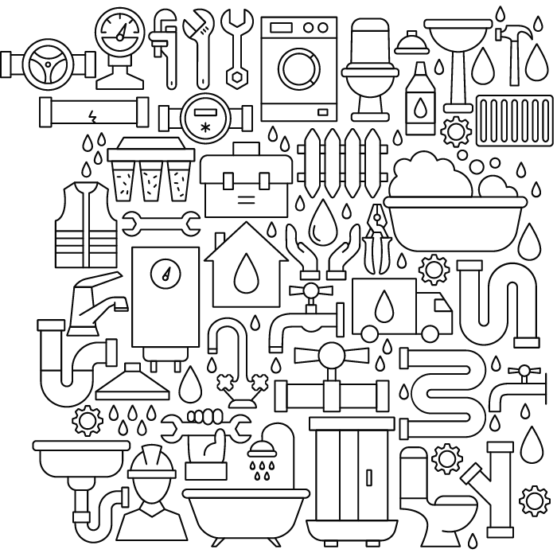

LLEVAMOS TRANQUILIDAD Y PROFESIONALISMO A TODOS NUESTROS CLIENTES

Ventajas competitivas
Descubre lo que nos diferencia
En el ámbito de servicios ambientales,
la eficacia y rapidez en destapaciones y gestión de residuos peligrosos son cruciales. La
prontitud en la acción minimiza riesgos y protege el entorno. Nuestra empresa, con décadas de
experiencia, garantiza una respuesta ágil y eficiente para preservar la seguridad ambiental.
Con 23 años de experiencia
Desde nuestro inicio como emprendimiento familiar
en 1950, nos enorgullecemos de ser la tercera generación que responde con profesionalismo y
soluciones precisas a las demandas del mercado.
Rápida respuesta
Nuestros equipos de trabajo tienen una respuesta
rápida en CABA de 1h30m y en provincia de Buenos Aires de 2h30m.
Equipos especializados
Camiones atmosféricos de 4m3, 10m3, 18m3, 20m3 con
sistema hidrojet de 250 bar
Equipos de desobstrucción 10 máquinas Cofahe de 16mm, 22mm y de
32mm
Máquinas Hidrojet de 150 bar portátiles domiciliarias para desobstrucción y limpieza de
cañerías cloacales y pluviales.
Contamos con equipos de diagnóstico por imagen (video
inspección) para el chequeo interno de cañerías.
Trabajos de calidad
Se garantiza el trabajo teniendo en cuenta el
volumen de actividad que el cliente desarrolla. Nuestros trabajos se filman en todo su desarrollo
para que el cliente corrobore la calidad del proceso y resultado final.
Certificados
Contamos con certificado de Deposición Final para
residuos peligrosos.
Nuestros servicios
Nuestra empresa de destapaciones
ofrece un amplio espectro de servicios para asegurar el óptimo funcionamiento de sistemas de
saneamiento. Realizamos destapaciones y desagotes con tecnología de diagnóstico por imágenes,
garantizando eficacia y precisión. Además, gestionamos residuos peligrosos con certificación de
deposición final y proporcionamos mantenimiento preventivo para prevenir obstrucciones en
cañerías.
Camiones atmosféricos
·Desagote de cámaras decantadoras de
grasa ·Cámaras de barro. ·Bombas de achique. ·Retiro de distintos tipos de residuos
peligrosos con certificado de deposición final.
Destapaciones
Destapaciones mecanizadas con tres tipos de
maquinaria, resortes de 32mm. 22mm. y 16mm. Destapaciones hidro-cinéticas por alta presión de
agua de 150bar. que no daña la cañería y la limpia.
Arquitectura
Contamos con un equipo de arquitectos para la
realización de cámaras, cambios de cañerías o cambios estructurales.
Video inspección
Inspección por imágenes en todo tipo de cañerías y
encamisados, para resolver y constatar roturas.
Hidrolavado
De alta presión en cámaras con ingreso de personal.
Algunos de nuestros trabajos
Trabajo de desagote de cámara decantadora de grasa y destapación de cañerías.
Desagote de cámara de grasa con ingreso de personal para retirar
sedimentos
pesados.
Destapación pluvial en piso 24 con maquina con resorte de 22mm.
Restaurante Cosi Mi Piace. Destapación de guardaganados con conexión a línea cloacal. Máquinacon
resorte de 16mm.
Destapación con máquina y resortes de 32mm. En cuartel 4 de Recoleta.
Desagote de cámara y destapación con Hidroyet de 250bar desde 2do piso hacia salida cloacal
principal. Trabajo en conjunto con La Victoria.
Destapacion de guardaganado con resorte de 16mm con conección a cámara decantadora.
Destapación por medio de hidrojet de 150bar en cañeria cloacal de 110mm. hasta troncal cloacal.
Inspección por imágenes en aeropuerto de Ezeiza en cañerías de 4 pulgadas. Se detectó en la bajada
de la cañería una rotura en el codo de la misma.